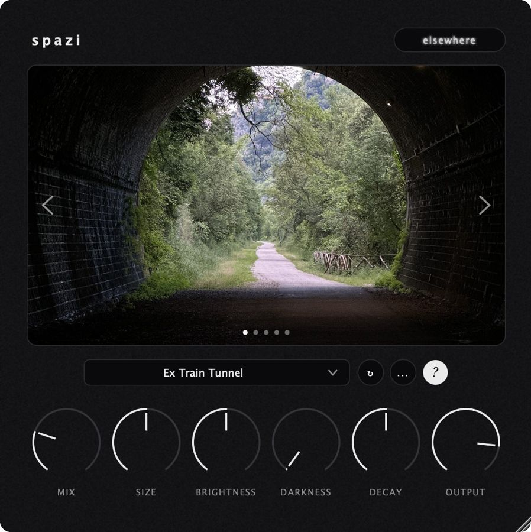
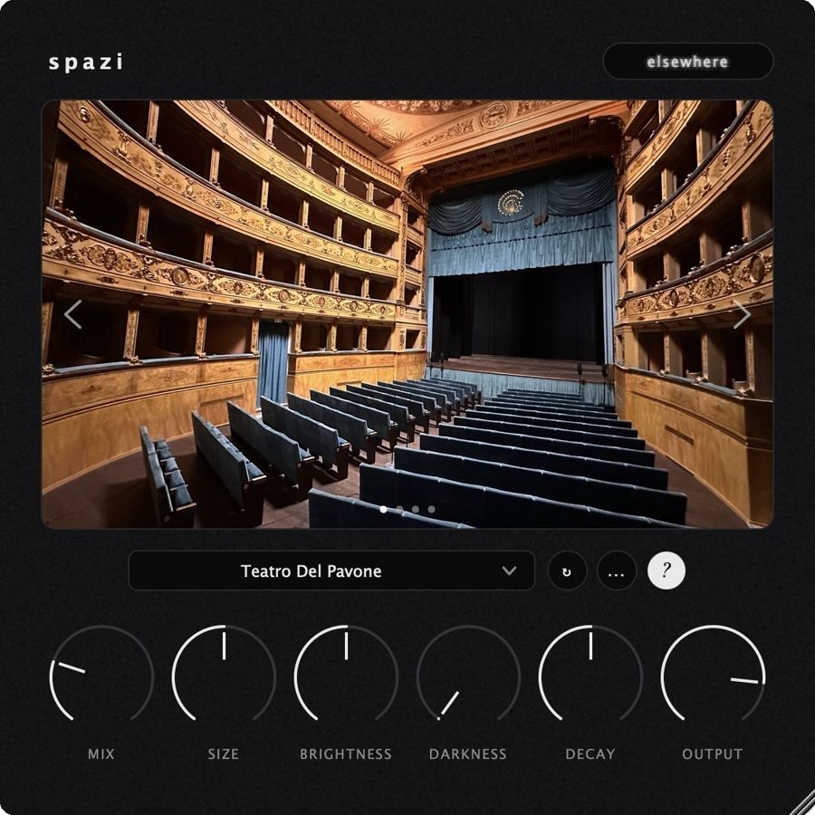
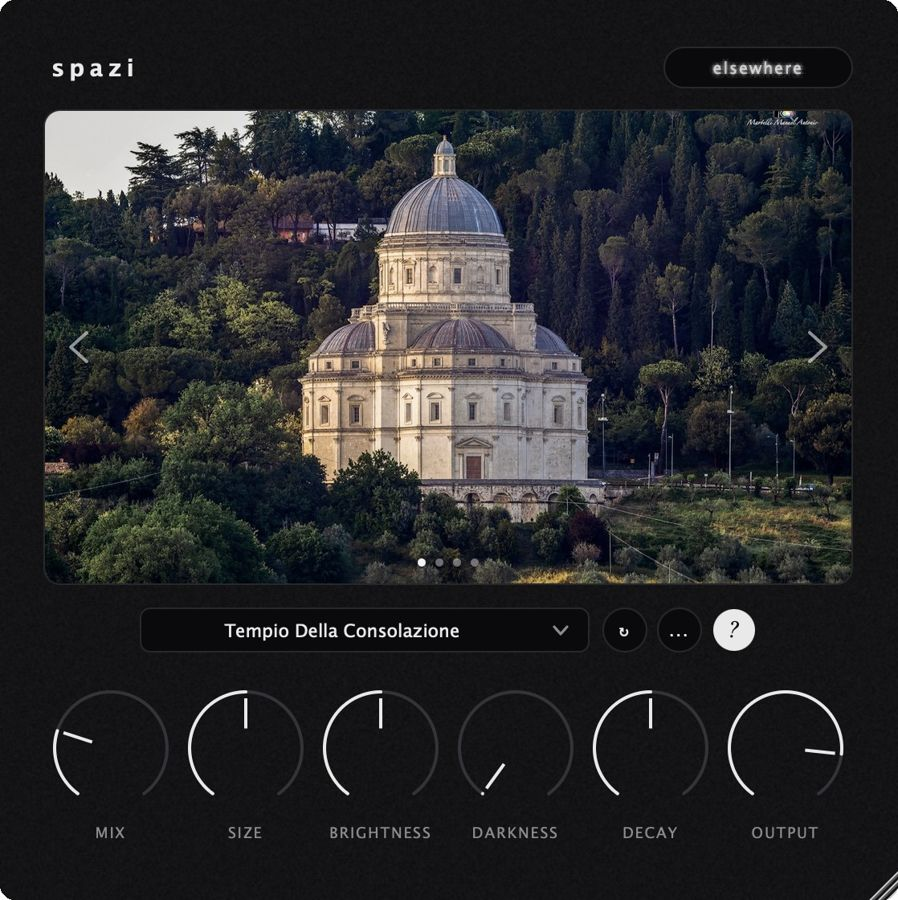
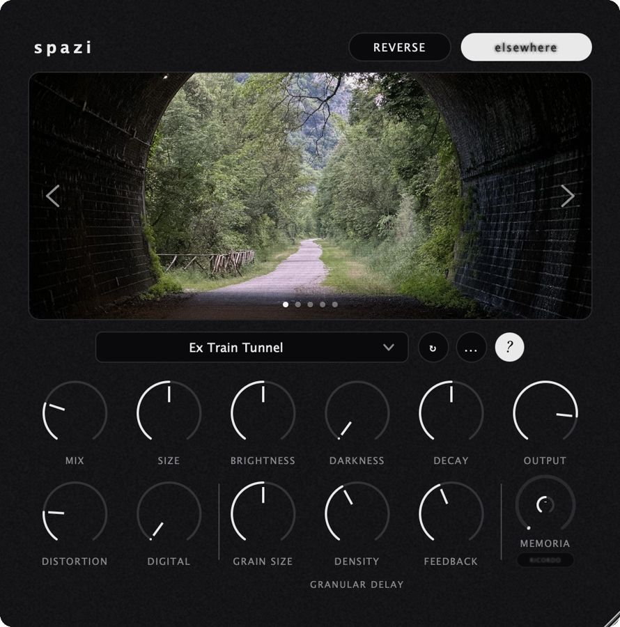
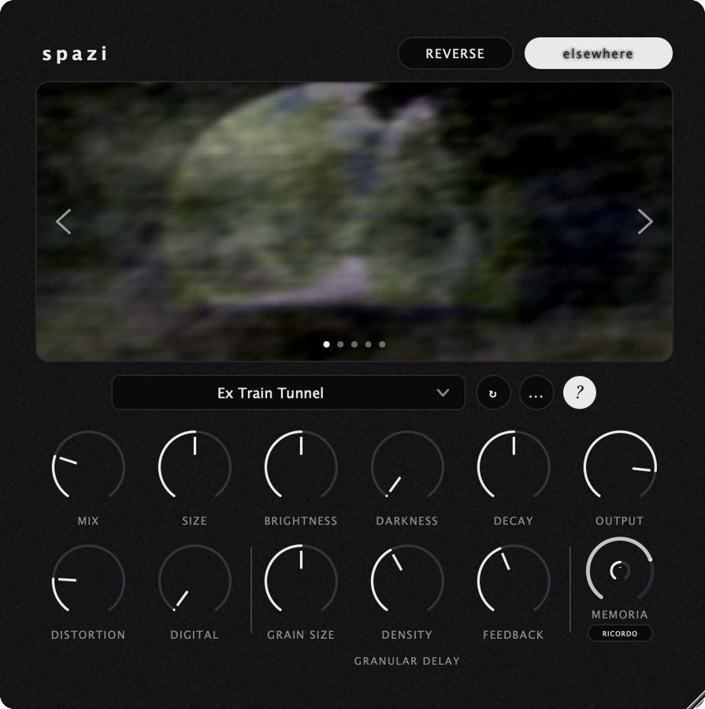

Spazi is a convolution reverb I've been building on my own. The idea is simple: instead of simulating a room, every preset is a real place I went to and recorded myself, and the photos I took there travel with the preset.



I write the code in C++ with JUCE, and I'll admit the engine took longer than the recordings. To get it right I measured it with sine sweeps deconvolved against a dry reference and kept fixing what the measurements showed, until it behaved the way I wanted. I learned more from that than from any tutorial.
The elsewhere page is the creative side, and its core is SPETTRO, a modal engine. It analyses the impulse response once, extracts its resonant modes (the frequencies the room rings at, each with its own decay) and resynthesises the space from a subset of them. MEMORIA sets how many modes survive: at zero the room is intact; as it rises the space loses resolution, the remaining modes drift in frequency, and at the top only a handful are left and the reverb settles into a sustained harmonic chord, still derived from the place it came from. RICORDO reseeds the drift, so each press gives a different version of the same room. Decay changes how long the tail lasts; SPETTRO changes what it's made of. On top of that, elsewhere adds a reverse mode, two distortion stages on the wet signal, one analogue-style and one digital, and a granular delay with grain size, density and feedback.


Some of the places
Recorded with a dodecahedron and two omnidirectional microphones.
Renaissance temple on a Greek-cross plan, a dome about 50 m high. Recorded with the permission of La Consolazione E.T.A.B.
An 18th-century theatre with four tiers of boxes, recorded from the centre of the hall.
A disused railway tunnel in the Nera gorge.
The concrete underpass that leads to the Roman site.
Alongside Spazi I'm working on a series of sample-based instruments that share an engine I wrote from scratch (varispeed playback, a grain stretcher), a delay built around birdsong called Lek, and a couple of stranger things still in progress.